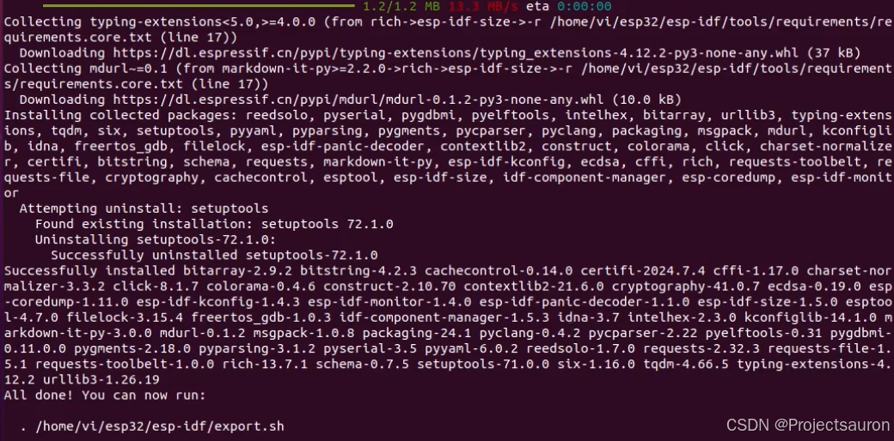
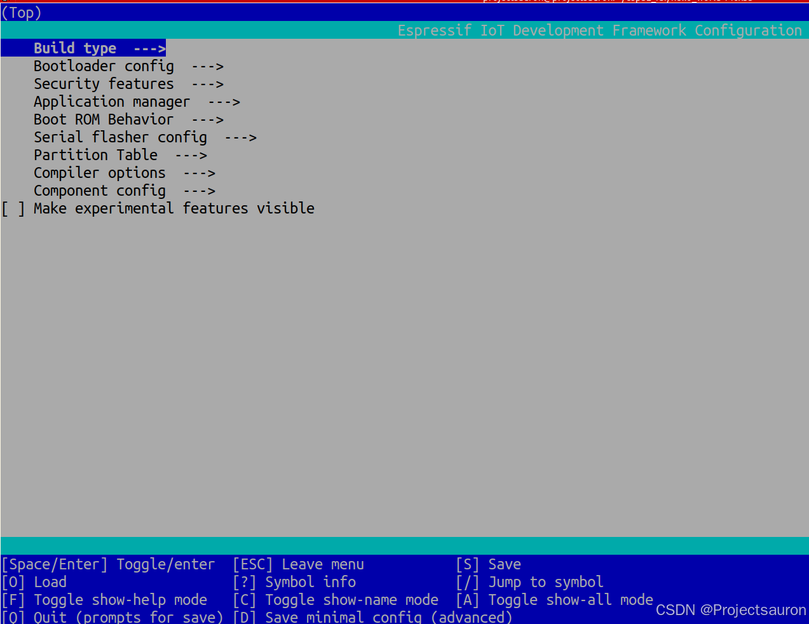
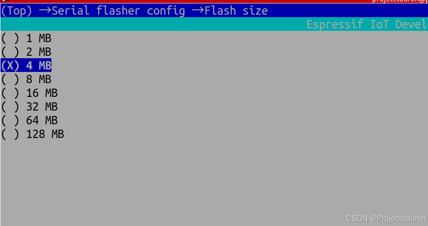
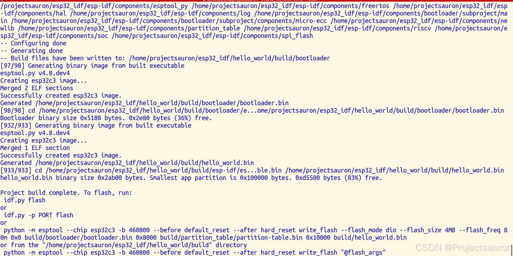
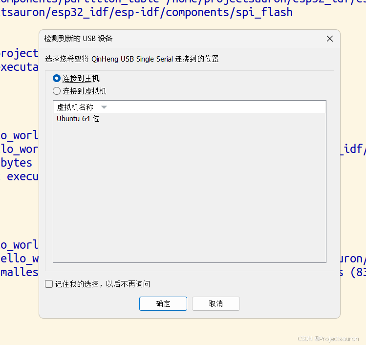
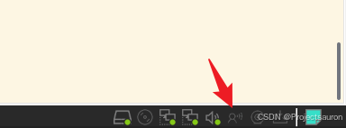
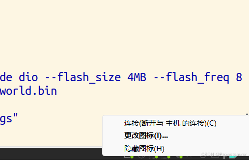
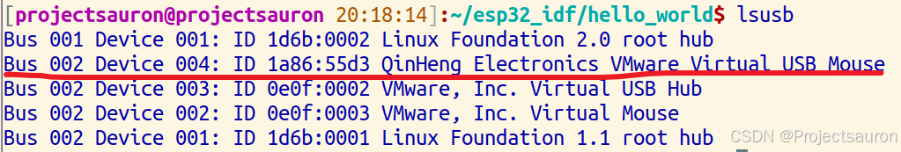
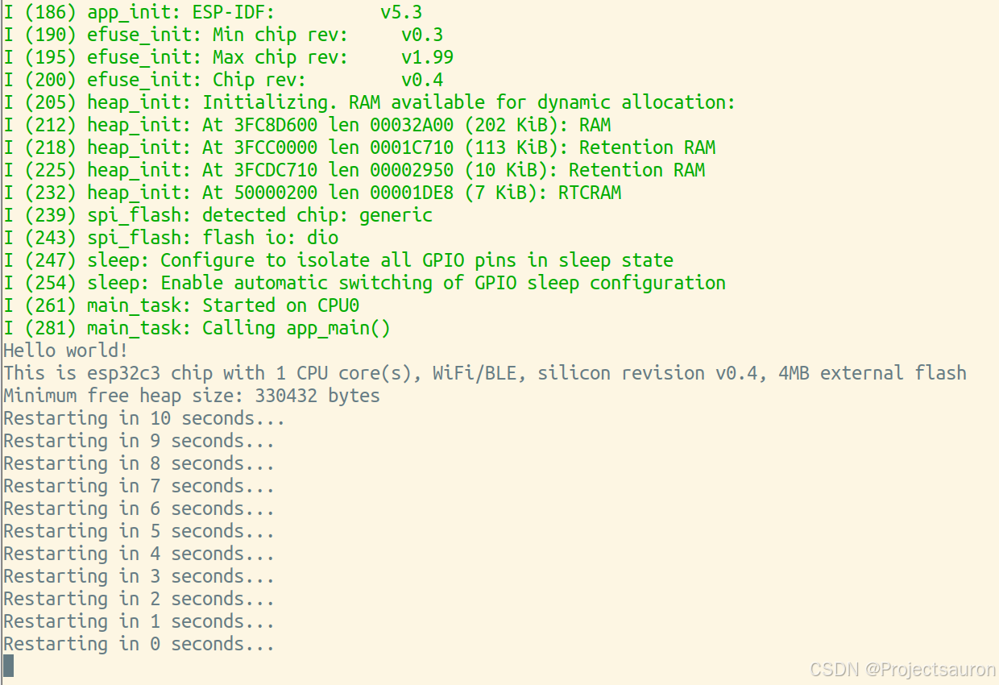

ESP32-IDF 在 Ubuntu 下的配置
[toc]
参考资料：官方文档：Linux 和 macOS 平台工具链的标准设置。
一、安装准备
参照官方文档，首先下载编译 ESP-IDF 所需要的软件包：
1 | sudo apt-get install git wget flex bison gperf python3 python3-pip python3-venv cmake ninja-build ccache libffi-dev libssl-dev dfu-util libusb-1.0-0 |
二、获取 ESP-IDF
首先创建一个目录用来作为 esp32 的工作目录：
1 | [projectsauron]:~$ mkdir esp32_idf |
为了解决国内开发者从 Github 克隆 esp 相关仓库慢的问题，官方已将 esp-idf 和部分重要仓库及其关联的子模块镜像到了 jihu，这些仓库将自动从原始仓库进行同步。
所以先获取官方的工具：（相关信息见 乐鑫开源/esp-gitee-tools）
1 | [projectsauron]:~/esp32_idf$ git clone https://gitee.com/EspressifSystems/esp-gitee-tools.git |
使用如下命令即可使用镜像的 URL：
1 | [projectsauron]:~/esp32_idf$ . ./esp-gitee-tools/jihu-mirror.sh set |
然后就可以克隆远程仓库了：（经过上面的设置后，很快就可以下好了）
1 | [projectsauron]:~/esp32_idf$ git clone -b v5.3 --recursive https://github.com/espressif/esp-idf.git |
三、设置工具
首先，如果 python 没有换国内源的话，下载速度会非常慢，而且很容易下载失败，所以先给 pip 换国内源：
1 | pip config set global.index-url http://mirrors.aliyun.com/pypi/simple |
除了 ESP-IDF 本身，还需要为支持 ESP32 的项目安装 ESP-IDF 使用的各种工具，比如编译器、调试器、Python 包等。
1 | [projectsauron]:~/esp32_idf$ cd ~/esp/esp-idf |
注意，./install.sh espc3 后面跟的参数是你所要开发的 ESP32 的芯片型号；当然一次性也可以定多个目标，比如：./install.sh esp32,esp32s2；如果需要一次性为所有支持的目标芯片安装工具，可以运行如下命令：./install.sh all。
可选的芯片如下：
esp32 esp32s2 esp32c3 esp32s3 esp32c2 esp32c6 esp32h2 esp32p4 esp32c5 esp32c61
如果途中发送了错误，就执行如下命令：
1 | rm -rf ~/.espressif/ |
然后再重新执行上面的下载脚本即可。
下载完后，最终显示如下：

注意，在每次刚打开终端是，先执行如下命令才能就行编译：
1 | [projectsauron]:~/esp32_idf/esp-idf$ . ./export.sh |
四、使用案例
我这里先直接使用官方的例程进行编译运行：
1 | [projectsauron]:~/esp32_idf$ cp -r ./esp-idf/examples/get-started/hello_world/ . |
注意，编译时要在对应的目录里进行
首先要选择目标芯片（选择自己的芯片型号）：
1 | [projectsauron]:~/esp32_idf/hello_world$ idf.py set-target esp32c3 |
然后运行工程配置工具 menuconfig：
1 | [projectsauron]:~/esp32_idf/hello_world$ idf.py menuconfig |
大家根据自己的芯片信号进行配置，配置界面如下：

按下 J、K 键分别是向下、向上移动，H 键是返回键，L 键或空格键是选中。
我的设备是 ESP32-C3，这里改一个配置就可以了：进入 Serial flasher config -> Flash size(2MB)：

将光标移到 4 MB，按下空格即可。
然后按 S 键保存，再按下 ESC 键或 q 键即可退出。
现在就配置完成，可以进行编译了，运行如下命令可以编译应用程序和所有 ESP-IDF 组件，接着生成引导加载程序、分区表和应用程序二进制文件。：
1 | [projectsauron]:~/esp32_idf/hello_world$ idf.py build |
编译完成结果如下：

然后将开发板连接到电脑（我是在 VMware 下运行的 Ubuntu）：
连接上开发板后，VMware 弹出如下窗口，选中连接到主机：

点击 VMware 右下角的图标，就可以将开发板连接到虚拟机了：



最后，通过如下命令将刚才生成的二进制文件烧录到开发板上，并同时打开监视器，监视 “hello_world” 工程的运行情况。
1 | [projectsauron]:~/esp32_idf/hello_world$ idf.py flash monitor |
结果如下则表示烧录成功：

最后，按下 Ctrl+] 即可退出。
如果想自己创建一个工程项目，可以使用如下命令：
1 | [projectsauron]:~/esp32_idf$ idf.py create-project test |
该命令表示创建一个名为 test 的工程，然后在文件 ,./test/main/test.c 下写自己的代码即可。